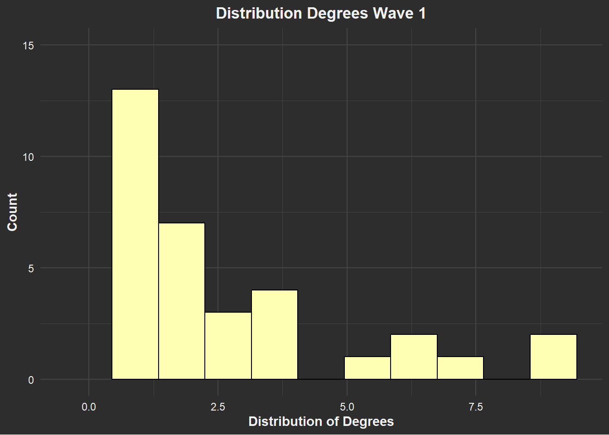
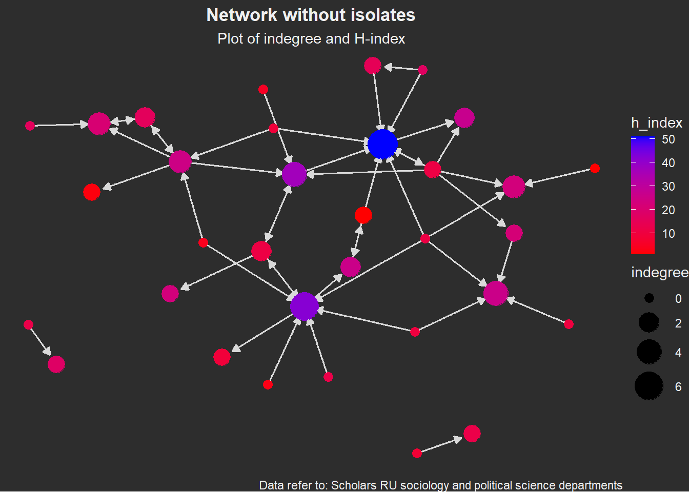

Draft Result Descriptives
Verooo
2024-11-23
1 Getting started
rm(list = ls())1.1 Packages
require(tidyverse)
require(RSiena)
require(RsienaTwoStep)
# install.packages('data.table')
require(data.table) # mainly for faster data handling
# install.packages('xml2')
require(xml2)
# install.packages('rvest')
require(rvest)
require(igraph)
require(ggraph)
require(ggplot2)
# install.packages('visNetwork')
require(visNetwork)
# install.packages('threejs')
require(threejs)
# install.packages('networkD3')
require(networkD3)
require(RColorBrewer)1.2 Functions
Functions chunk
fpackage.check <- function(packages) {
lapply(packages, FUN = function(x) {
if (!require(x, character.only = TRUE)) {
install.packages(x, dependencies = TRUE)
library(x, character.only = TRUE)
}
})
}
fsave <- function(x, file = NULL, location = "./data/processed/") {
ifelse(!dir.exists("data"), dir.create("data"), FALSE)
ifelse(!dir.exists("data/processed"), dir.create("data/processed"), FALSE)
if (is.null(file))
file = deparse(substitute(x))
datename <- substr(gsub("[:-]", "", Sys.time()), 1, 8)
totalname <- paste(location, file, "_", datename, ".rda", sep = "")
save(x, file = totalname) #need to fix if file is reloaded as input name, not as x.
}
fload <- function(filename) {
load(filename)
get(ls()[ls() != "filename"])
}
fshowdf <- function(x, ...) {
knitr::kable(x, digits = 2, "html", ...) %>%
kableExtra::kable_styling(bootstrap_options = c("striped", "hover")) %>%
kableExtra::scroll_box(width = "100%", height = "300px")
}
# this is the most important one. We created it in the previous script
f_pubnets <- function(df_scholars = df, list_publications = publications, discip = "sociology" + "political science",
affiliation = "RU", waves = list(wave1 = c(2018, 2019, 2020), wave2 = c(2021, 2022, 2023))) {
publications <- list_publications %>%
bind_rows() %>%
distinct(title, .keep_all = TRUE)
df_scholars %>%
filter(affil1 == affiliation | affil2 == affiliation) %>%
filter(discipline == discip) -> df_sel
networklist <- list()
for (wave in 1:length(waves)) {
networklist[[wave]] <- matrix(0, nrow = nrow(df_sel), ncol = nrow(df_sel))
}
publicationlist <- list()
for (wave in 1:length(waves)) {
publicationlist[[wave]] <- publications %>%
filter(gs_id %in% df_sel$gs_id) %>%
filter(year %in% waves[[wave]]) %>%
select(author) %>%
lapply(str_split, pattern = ",")
}
publicationlist2 <- list()
for (wave in 1:length(waves)) {
publicationlist2[[wave]] <- publicationlist[[wave]]$author %>%
# lowercase
lapply(tolower) %>%
# Removing diacritics
lapply(stri_trans_general, id = "latin-ascii") %>%
# only last name
lapply(word, start = -1, sep = " ") %>%
# only last last name
lapply(word, start = -1, sep = "-")
}
for (wave in 1:length(waves)) {
# let us remove all publications with only one author
remove <- which(sapply(publicationlist2[[wave]], FUN = function(x) length(x) == 1) == TRUE)
publicationlist2[[wave]] <- publicationlist2[[wave]][-remove]
}
for (wave in 1:length(waves)) {
pubs <- publicationlist2[[wave]]
for (ego in 1:nrow(df_sel)) {
# which ego?
lastname_ego <- df_sel$lastname[ego]
# for all publications
for (pub in 1:length(pubs)) {
# only continue if ego is author of pub
if (lastname_ego %in% pubs[[pub]]) {
aut_pot <- which.max(pubs[[pub]] %in% lastname_ego)
# only continue if ego is first author of pub
if (aut_pot == 1) {
# check all alters/co-authors
for (alter in 1:nrow(df_sel)) {
# which alter
lastname_alter <- df_sel$lastname[alter]
if (lastname_alter %in% pubs[[pub]]) {
networklist[[wave]][ego, alter] <- networklist[[wave]][ego, alter] + 1
}
}
}
}
}
}
}
return(list(df = df_sel, network = networklist))
}More functions
fcolnet <- function(data = scholars, university = "RU", discipline = "sociology" + "political science",
waves = list(c(2015, 2018), c(2019, 2023)), type = c("first")) {
# step 1
demographics <- do.call(rbind.data.frame, data$demographics)
demographics <- demographics %>%
mutate(Universiteit1.22 = replace(Universiteit1.22, is.na(Universiteit1.22), ""), Universiteit2.22 = replace(Universiteit2.22,
is.na(Universiteit2.22), ""), Universiteit1.24 = replace(Universiteit1.24, is.na(Universiteit1.24),
""), Universiteit2.24 = replace(Universiteit2.24, is.na(Universiteit2.24), ""), discipline.22 = replace(discipline.22,
is.na(discipline.22), ""), discipline.24 = replace(discipline.24, is.na(discipline.24), ""))
sample <- which((demographics$Universiteit1.22 %in% university | demographics$Universiteit2.22 %in%
university | demographics$Universiteit1.24 %in% university | demographics$Universiteit2.24 %in%
university) & (demographics$discipline.22 %in% discipline | demographics$discipline.24 %in% discipline))
demographics_soc <- demographics[sample, ]
scholars_sel <- lapply(scholars, "[", sample)
# step 2
ids <- demographics_soc$au_id
nwaves <- length(waves)
nets <- array(0, dim = c(nwaves, length(ids), length(ids)), dimnames = list(wave = 1:nwaves, ids,
ids))
dimnames(nets)
# step 3
df_works <- tibble(works_id = unlist(lapply(scholars_sel$work, function(l) l$id)), works_author = unlist(lapply(scholars_sel$work,
function(l) l$author), recursive = FALSE), works_year = unlist(lapply(scholars_sel$work, function(l) l$publication_year),
recursive = FALSE))
df_works <- df_works[!duplicated(df_works), ]
# step 4
if (type == "first") {
for (j in 1:nwaves) {
df_works_w <- df_works[df_works$works_year >= waves[[j]][1] & df_works$works_year <= waves[[j]][2],
]
for (i in 1:nrow(df_works_w)) {
ego <- df_works_w$works_author[i][[1]]$au_id[1]
alters <- df_works_w$works_author[i][[1]]$au_id[-1]
if (sum(ids %in% ego) > 0 & sum(ids %in% alters) > 0) {
nets[j, which(ids %in% ego), which(ids %in% alters)] <- 1
}
}
}
}
if (type == "last") {
for (j in 1:nwaves) {
df_works_w <- df_works[df_works$works_year >= waves[[j]][1] & df_works$works_year <= waves[[j]][2],
]
for (i in 1:nrow(df_works_w)) {
ego <- rev(df_works_w$works_author[i][[1]]$au_id)[1]
alters <- rev(df_works_w$works_author[i][[1]]$au_id)[-1]
if (sum(ids %in% ego) > 0 & sum(ids %in% alters) > 0) {
nets[j, which(ids %in% ego), which(ids %in% alters)] <- 1
}
}
}
}
if (type == "all") {
for (j in 1:nwaves) {
df_works_w <- df_works[df_works$works_year >= waves[[j]][1] & df_works$works_year <= waves[[j]][2],
]
for (i in 1:nrow(df_works_w)) {
egos <- df_works_w$works_author[i][[1]]$au_id
if (sum(ids %in% egos) > 0) {
nets[j, which(ids %in% egos), which(ids %in% egos)] <- 1
}
}
}
}
output <- list()
output$data <- scholars_sel
output$nets <- nets
return(output)
}1.3 Load data
Scholar data
scholars <- fload("./data/processed/scholars_20240924.rda")
# make sure to lead fload first of course# save the output of your function
test <- fcolnet(data = scholars, university = "RU", discipline = c("sociology", "political science"),
waves = list(c(2015, 2018), c(2019, 2023)), type = c("first"))Ego data
df_ego <- fload("./data/processed/df_ego_20241108.rda")test_w1 <- igraph::graph_from_adjacency_matrix(
test$nets[1,,], # first wave of data.
# (thus I select the array of networks and take the first matrix)
mode = c("directed"),
weighted = NULL,
diag = FALSE,
add.colnames = NULL,
add.rownames = NULL)1.4 Network Description
The network data we are looking at pertains to 101 scholars and their publications. In the time frame of the wave at hand, namely form 2015 to 2018, we find 47 edges, with 6 reciprocated collaborations 36 ties that are asymmetric. Additionally, there were 5009 occasions in which a ties could have been made but was not. The edge density of 0.004 suggests that from all possible edges, this sample contains relatively few.
In terms of triad-configurations, pertaining to the different possibilities three scholars could collaborate, we find that the most common one is no collaboration at all (configuration ‘003’). Beyond that, the configuration ‘012’ is also common, meaning that only one directed edge is present in the triad. In our sample it is also common for such edge to be reciprocated, as seen in the third-highes-t count of the triad-configuration ‘102’, a graph with a mutual connection between two vertices. Overall, the seems to be high number of isolates in the sample network.
1.4.1 Nr. of nodes/vertices
vcount(test_w1)#> [1] 1011.4.2 Nr. of edges
ecount(test_w1)#> [1] 471.4.3 Dyad census
igraph::dyad_census(test_w1)#> $mut
#> [1] 6
#>
#> $asym
#> [1] 35
#>
#> $null
#> [1] 50091.4.4 Triad-census
igraph::triad_census(test_w1)#> [1] 162709 3266 561 19 38 25 17 10 1 0 1 0 1
#> [14] 1 1 01.4.5 Edge-density
# edge density
igraph::edge_density(test_w1)#> [1] 0.0046534651.4.6 more in depth:
1.4.6.1 Degree centrality
Degree centrality, often simply called ‘degree’, measures the number of connections a scholar, or ego, has with other scholars, known as alters. In the context of our dataset, we distinguish between two types of degrees: incoming connections (indegrees) and outgoing connections (outdegrees). Indegrees represent ties directed toward the ego, which in this case signify instances where the ego is not the primary author of a paper. Conversely, outdegrees represent ties originating from the ego, indicating collaborations where the ego assumes the role of the first author.
# Calculate degree centrality
degree_testw1 <- degree(test_w1)
degree_testw1 <- as.data.frame(degree_testw1)
ggplot(degree_testw1, aes(x = as.numeric(degree_testw1))) +
geom_histogram(binwidth = 0.9, fill = "#FFFFB3", color = "black") +
labs(
title = "Distribution Degrees Wave 1",
x = "Distribution of Degrees",
y = "Count"
) +
ylim(0, 15) + # Set y-axis limits
theme_minimal(base_family = "Arial") + # Minimal, clean base theme
theme(
plot.background = element_rect(fill = "#2d2d2d", color = NA), # Dark background
panel.background = element_rect(fill = "#2d2d2d", color = NA), # Dark panel background
panel.grid.major = element_line(color = "#444444"), # Subtle grid lines
panel.grid.minor = element_line(color = "#444444"),
axis.text = element_text(color = "#f0f0f0"), # White axis text
axis.title = element_text(color = "#f0f0f0", face = "bold"), # Bold white axis titles
plot.title = element_text(color = "#f0f0f0", face = "bold", hjust = 0.5), # White centered title
legend.background = element_rect(fill = "#2d2d2d", color = NA), # Dark legend background
legend.text = element_text(color = "#f0f0f0") # White legend text
) +
guides(fill = "none") # Remove the legend
The indegree distribution is right-skewed. This suggests that only very few vertices have many infegrees, and that most vertices have a low number of indegrees.
1.4.6.2 Betweenness Centrality
(with isolates)
# Calculate betweenness centrality
betweenness_w1 <- igraph::betweenness(test_w1, directed = TRUE)
betweenness_w1 <- as.data.frame(betweenness_w1)
ggplot(betweenness_w1, aes(as.numeric(betweenness_w1), colour = as.numeric(betweenness_w1))) +
geom_histogram(binwidth = 1.2, fill = "#FFFFB3") +
labs(
title = "Distribution Betweenness Wave 1",
x = "Distribution of Betweenness",
y = "Count") +
theme_minimal(base_family = "Arial") + # Minimal, clean base theme
theme(
plot.background = element_rect(fill = "#2d2d2d", color = NA), # Dark background
panel.background = element_rect(fill = "#2d2d2d", color = NA), # Dark panel background
panel.grid.major = element_line(color = "#444444"), # Subtle grid lines
panel.grid.minor = element_line(color = "#444444"),
axis.text = element_text(color = "#f0f0f0"), # White axis text
axis.title = element_text(color = "#f0f0f0", face = "bold"), # Bold white axis titles
plot.title = element_text(color = "#f0f0f0", face = "bold", hjust = 0.5), # White centered title
legend.background = element_rect(fill = "#2d2d2d", color = NA), # Dark legend background
legend.text = element_text(color = "#f0f0f0") # White legend text
) +
guides(fill = guide_legend(title = "Betweenness (rounded)")) # Customize legend
1.4.6.3 Clustering
# Clustering the wave
clustering_w1 <- igraph::transitivity(test_w1, type = "local")
clustering_w1 <- as.data.frame(clustering_w1)
# Generate the dark mode plot with a single color fill
ggplot(clustering_w1, aes(x = as.numeric(clustering_w1))) +
geom_histogram(binwidth = 0.05, fill = "#FFFFB3", color = "black", position = "dodge") +
labs(
title = "Distribution Clustering Wave 1",
x = "Distribution of Clustering",
y = "Count"
) +
theme_minimal(base_family = "Arial") + # Clean, minimal base theme
theme(
plot.background = element_rect(fill = "#2d2d2d", color = NA), # Dark background
panel.background = element_rect(fill = "#2d2d2d", color = NA), # Dark panel background
panel.grid.major = element_line(color = "#444444"), # Subtle grid lines
panel.grid.minor = element_line(color = "#444444"),
axis.text = element_text(color = "#f0f0f0"), # White axis text
axis.title = element_text(color = "#f0f0f0", face = "bold"), # Bold white axis titles
plot.title = element_text(color = "#f0f0f0", face = "bold", hjust = 0.5), # White centered title
legend.background = element_rect(fill = "#2d2d2d", color = NA), # Dark legend background
legend.text = element_text(color = "#f0f0f0") # White legend text
) + guides(fill = "none") # Remove the legend (since all bars are the same color)
2 Network-level descriptives
2.1 x. Average path length
mean((ego_size(test_w1, order = 2, mode = "out") - 1)/vcount(test_w1))#> [1] 0.010195082.2 STILL DO! Segregation - Mortons I - also graphs below
STILL DO!
3 Plotting:
3.1 Plots WITH isolates
###Gender #### whole network
plot(test_w1,
vertex.color = ifelse(df_ego$gender == 1, "#FFED6F", "#80B1D3"), # now, I can use actor attributes for plotting.
# here: if gender = 1 (aka man) then red dot, if not then blue
vertex.label = NA,
vertex.size = 7.5,
edge.width = 0.5,
edge.arrow.size = 0.1,
main = "Network with isolates [yellow = female, blue = male]",)
3.1.0.1 per department
indegr_w1 <- degree(test_w1, mode = "in")
# assign gender to scholar
V(test_w1)$gender <- df_ego$gender
# assign discipline to scholar
V(test_w1)$discipline <- df_ego$discipline.24
V(test_w1)$indegree <- indegr_w1
p_gender <- ggraph(test_w1, layout = "fr") + geom_edge_link(end_cap = circle(4, 'mm'),color = "#D9D9D9", width = 0.7, arrow = arrow(length = unit(2, "mm"), type = "closed")) + geom_node_point(aes(size = indegree,
color = as.factor(discipline), shape = as.factor(gender))) + scale_size(range = c(3, 10)) + theme_void() + theme(
plot.background = element_rect(fill = "#2d2d2d", color = NA), # Dark background
panel.background = element_rect(fill = "#2d2d2d", color = NA),
text = element_text(color = "#f0f0f0") # White text
)
p_gender + labs(title = "Departments with isolates", subtitle = "Plot of indegree and gender", caption = "Gender: 0 = female, 1 = male.\n Data refer to scholars from Radboud University.") +
theme(plot.title = element_text(hjust = 0.5, face = "bold", color = "#f0f0f0"), plot.subtitle = element_text(hjust = 0.5, color = "#f0f0f0"), plot.caption = element_text(hjust = 1, color = "#f0f0f0"))
3.1.1 H-Index
3.1.1.1 whole network
indegr_w1 <- degree(test_w1, mode = "in")
# assign h-index to scholar
V(test_w1)$h_index <- df_ego$h_index
V(test_w1)$indegree <- indegr_w1
# set size of plot
options(repr.plot.width = 15, repr.plot.height = 18)
# plot wave 1 with isolates
p_iso <- ggraph(test_w1, layout = "fr") + geom_edge_link(end_cap = circle(4, 'mm'),color = "#D9D9D9", width = 0.3, arrow = arrow(length = unit(1, "mm"), type = "closed")) + geom_node_point(aes(size = indegree,
color = h_index)) + scale_size(range = c(3, 10)) +
scale_color_gradient(low = "#F6222E", high = "#3283FE") + # Retain original gradient
theme_void() +
theme(
plot.background = element_rect(fill = "#2d2d2d", color = NA), # Dark background
panel.background = element_rect(fill = "#2d2d2d", color = NA),
text = element_text(color = "#f0f0f0") # White text
)
p_iso + labs(title = "Network with isolates", subtitle = "Plot of indegree and H-index", caption = "Data refer to: Scholars RU sociology and political science departments") +
theme(plot.title = element_text(hjust = 0.5, face = "bold"), plot.subtitle = element_text(hjust = 0.5),
plot.caption = element_text(hjust = 1))
3.1.2 H-Index and Gender
3.1.2.1 whole network
indegr_w1 <- degree(test_w1, mode = "in")
#assign gender to scholar
V(test_w1)$gender <- df_ego$gender
# V(test_w1)$gender <- ifelse(df_ego$gender >= 0.5,1,0)
# assign h-index to scholar
V(test_w1)$h_index <- df_ego$h_index
V(test_w1)$indegree <- indegr_w1
p_gender <- ggraph(test_w1,
layout = "fr") +
geom_edge_link(end_cap = circle(4, 'mm'),color = "#D9D9D9", width = 0.3, arrow = arrow(length = unit(1, "mm"), type = "closed")) + # Darker edge color
geom_node_point(aes(size = indegree, color = h_index, shape = as.factor(gender))) +
scale_size(range = c(3, 10)) +
scale_color_gradient(low = "#F6222E", high = "#3283FE") + # Retain original gradient
theme_void() +
theme(
plot.background = element_rect(fill = "#2d2d2d", color = NA), # Dark background
panel.background = element_rect(fill = "#2d2d2d", color = NA),
text = element_text(color = "#f0f0f0") # White text
)
p_gender +
labs(title = "Network with isolates",
subtitle = "Plot of indegree, H-index and gender",
caption = "Gender: 0 = female, 1 = male.\nData refer to: Scholars RU sociology and political science departments.") +
theme(plot.title = element_text(hjust = 0.5, face = "bold", color = "#f0f0f0"), plot.subtitle = element_text(hjust = 0.5, color = "#f0f0f0"), plot.caption = element_text(hjust = 1, color = "#f0f0f0"))
3.2 Plots WITHOUT isolates
The isolates of the network have been removed to allow for a better readability of the graphs. Only vertices with edges remain part of the visualizations. In other words, only scholars with collaborations are seen in the following graphs.
indegr_w1 <- igraph::degree(test_w1, mode = "in")
isolates_w1 <- V(test_w1)[degree(test_w1, mode = "all") == 0]
noisolates_w1 <- delete_vertices(test_w1, isolates_w1)
gsize(noisolates_w1) # edges#> [1] 47gorder(noisolates_w1) # vertices #> [1] 333.2.1 Gender
3.2.1.1 DESCIP<> whole network
plot(noisolates_w1,
vertex.color = ifelse(df_ego$gender == 1, "#80B1D3", "#FFED6F"), # now, I can use actor attributes for plotting.
# here: if gender = 1 (aka man) then red dot, if not then blue
vertex.label = NA,
vertex.size = 9,
vertex.frame.color = "black",
edge.curved = 0.1,
edge.arrow.size = 0.5,
edge.color = "#999999",
edge.width = 0.5,
main = "Network without isolates [yellow = female, blue = male]",
asp=0) #### RESULTS <> indegree & department
#### RESULTS <> indegree & department
# assign gender to scholar
V(test_w1)$gender <- df_ego$gender
# assign disciplines to scholars
V(test_w1)$discipline <- df_ego$discipline.24
V(test_w1)$indegree <- indegr_w1
# remove isolates
noisolates_w1 <- delete_vertices(test_w1, V(test_w1)[degree(test_w1) == 0])
p_noisgender <- ggraph(noisolates_w1, layout = "fr") + geom_edge_link(end_cap = circle(4, 'mm'),color = "#D9D9D9", width = 0.7, arrow = arrow(length = unit(2, "mm")), type = "closed") +
geom_node_point(aes(size = indegree, color = as.factor(discipline), shape = as.factor(gender))) +
scale_size(range = c(3, 10)) + theme_void() + theme(
plot.background = element_rect(fill = "#2d2d2d", color = NA), # Dark background
panel.background = element_rect(fill = "#2d2d2d", color = NA),
text = element_text(color = "#f0f0f0") # White text
)
p_noisgender + labs(title = "Departments without isolates", subtitle = "Plot of indegree and gender",
caption = "Gender: 0 = female, 1 = male.\n Data refer to scholars from Radboud University.") + theme(plot.title = element_text(hjust = 0.5, face = "bold", color = "#f0f0f0"), plot.subtitle = element_text(hjust = 0.5, color = "#f0f0f0"), plot.caption = element_text(hjust = 1, color = "#f0f0f0"))
3.2.2 H-index
3.2.2.1 RESULTS<> Whole network (indegree)
indegr_w1 <- degree(test_w1, mode = "in")
# assign h-index to scholar
V(test_w1)$h_index <- df_ego$h_index
V(test_w1)$indegree <- indegr_w1
# remove isolates
noisolates_w1 <- delete_vertices(test_w1, V(test_w1)[degree(test_w1) == 0])
# set size of plot
options(repr.plot.width = 15, repr.plot.height = 15)
# plot wave 1 without isolates
p_noiso <- ggraph(noisolates_w1, layout = "fr") + geom_edge_link(end_cap = circle(3, 'mm'),color = "#D9D9D9", width = 0.7, arrow = arrow(length = unit(2, "mm"), type = "closed")) + geom_node_point(aes(size = indegree,
color = h_index)) + scale_size(range = c(3, 10)) + scale_color_gradient(low = "red", high = "blue") +
theme_void() + theme(
plot.background = element_rect(fill = "#2d2d2d", color = NA), # Dark background
panel.background = element_rect(fill = "#2d2d2d", color = NA),
text = element_text(color = "#f0f0f0") # White text
)
p_noiso + labs(title = "Network without isolates", subtitle = "Plot of indegree and H-index", caption = "Data refer to: Scholars RU sociology and political science departments") +
theme(plot.title = element_text(hjust = 0.5, face = "bold", color = "#f0f0f0"), plot.subtitle = element_text(hjust = 0.5, color = "#f0f0f0"), plot.caption = element_text(hjust = 1, color = "#f0f0f0"))
3.2.2.2 per department
indegr_w1 <- degree(test_w1, mode = "in")
# assign h-index to scholar
V(test_w1)$h_index <- df_ego$h_index
# assign discipline to scholar
V(test_w1)$discipline <- df_ego$discipline.24
V(test_w1)$indegree <- indegr_w1
# remove isolates
noisolates_w1 <- delete_vertices(test_w1, V(test_w1)[degree(test_w1) == 0])
# set size of plot
options(repr.plot.width = 15, repr.plot.height = 15)
# plot wave 1 without isolates
p_noiso <- ggraph(noisolates_w1, layout = "fr") + geom_edge_link(end_cap = circle(4, 'mm'),color = "#D9D9D9", width = 0.7, arrow = arrow(length = unit(2, "mm"), type = "closed")) + geom_node_point(aes(size = indegree,
color = h_index, shape = as.factor(discipline))) + scale_size(range = c(3, 10)) + scale_color_gradient(low = "red",
high = "blue") + theme_void() + theme(
plot.background = element_rect(fill = "#2d2d2d", color = NA), # Dark background
panel.background = element_rect(fill = "#2d2d2d", color = NA),
text = element_text(color = "#f0f0f0") # White text
)
p_noiso + labs(title = "Departments without isolates", subtitle = "Plot of indegree and H-index", caption = "Data refer to scholars from Radboud University.") +
theme(plot.title = element_text(hjust = 0.5, face = "bold", color = "#f0f0f0"), plot.subtitle = element_text(hjust = 0.5, color = "#f0f0f0"), plot.caption = element_text(hjust = 1, color = "#f0f0f0"))
3.2.3 RESULTS <> H-index AND Gender (indegree)
#assign gender to scholar
V(test_w1)$gender <- df_ego$gender
# assign h-index to scholar
V(test_w1)$h_index <- df_ego$h_index
V(test_w1)$indegree <- indegr_w1
#remove isolates
noisolates_w1 <- delete_vertices(test_w1, V(test_w1)[degree(test_w1) == 0])
p_noisogender <- ggraph(noisolates_w1,
layout = "fr") +
geom_edge_link(end_cap = circle(3, 'mm'),color = "#D9D9D9", width = 0.7, arrow = arrow(length = unit(1.75, "mm"), type = "closed")) + # Darker edge color
geom_node_point(aes(size = indegree, color = h_index, shape = as.factor(gender))) +
scale_size(range = c(3, 10)) +
scale_color_gradient(low = "#F6222E", high = "#3283FE") + # Retain original gradient
theme_void() +
theme(
plot.background = element_rect(fill = "#2d2d2d", color = NA), # Dark background
panel.background = element_rect(fill = "#2d2d2d", color = NA),
text = element_text(color = "#f0f0f0") # White text
)
p_noisogender + labs(title = "Network without isolates",
subtitle = "Plot of indegree, H-index and gender",
caption = "Gender: 0 = female, 1 = male.\n Data refer to: Scholars RU sociology and political science departments.") +
theme(plot.title = element_text(hjust = 0.5, face = "bold", color = "#f0f0f0"), plot.subtitle = element_text(hjust = 0.5, color = "#f0f0f0"), plot.caption = element_text(hjust = 1, color = "#f0f0f0"))